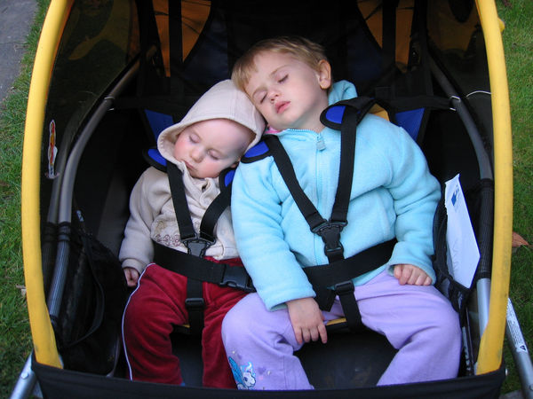

me pulling Ellen I had my first baby (Ellen) in March 2003, and my second (Luke) in 2006. In this article I describe how we set up our bike trailers for use with Ellen, and later, Luke and Ellen. Most of the article is about cycling with just Ellen in the trailer, but I've added a bit at the end about adding Luke. (See Two kids in a trailer below.)
After I had Ellen, I didn't start riding my bike again immediately after she was born. There are two main reasons for that. The first is that I had her by Cesarean, which meant that for the first few weeks I was recovering from abdominal surgery. The second is that I had a newborn baby to look after, so I couldn't ride until I felt she was big enough to come with me, at least to tolerate short journeys on smooth roads. As she neared two months old I began to feel that she was getting to be robust enough, so we worked on setting up the trailer (which we'd bought for her before she was born) for use with a baby.
The trailer we got was a Burley Solo. We decided to get a single child trailer, despite the fact that we want to have two kids eventually, because the bike facilities around here are in some ways very inadequate. The people who designed them seemed to assume that everyone rides a plain unencumbered bike, so anyone who has a bike that's a bit wider than normal (via having a front basket or towing a trailer) often finds herself having to get off the bike to try to try to lift or maneuver the bike through the barriers (such as bollards with a narrow spacing) put in the way. (Even when I was a person riding a plain bike, I still found plenty of problems with cycle facilities, but that's another story.) Thus I wanted a trailer that was narrow enough to get through these barriers, so we got a single trailer. When we have #2, we'll probably have to get a 2-child trailer and either take different routes or get off and guide the trailer through the barriers by lifting or moving the trailer sideways.
strap placement for car seat We had to do two things to get the trailer ready for transporting Ellen. The first is that the wheels weren't round. The tires didn't fit on the rim properly, so there was more than a 1cm difference between the radius to the outer edge of the tires over the circumference of the wheels. We fixed that by going back to the guy who sold us the trailer and getting him to swap the wheels over.
The other thing we needed to do was to figure out how to fit a car safety seat in the trailer. We have a Britax Rock-a-Tot car seat, and it has the interesting feature that the lap belt can go either in the usual place over the lap of the child, or it can go into slots underneath the child seat. This latter routing makes it much easier to get the baby in and out of the seat.
The trailer has a fabric kiddie seat already in it, with a padded bottom part and a mesh back part. We decided that the car seat wouldn't fit in the trailer with the back part in place. Since it was held in place simply by being looped over a bar at the top of the trailer, we took it off the bar and let the back part fall to the floor of the trailer for use later. We put the carry handle of the car seat in the position it would go in when in a car (sticking out behind the seat) and put in two sets of nylon webbing straps, one through the slots under the front part of the car seat and around the frame at the bottom of the trailer, and one through the slots at the back of the car seat and around the trailer frame. The diagram gives you an idea of how we put the straps on the seat, except that we used two separate sets of webbing anchoring the seat to the trailer frame instead of one car seat belt.
Ellen in the trailer, 8 months old And then we were ready to roll. This was just before Ellen was two months old. The first trip we did in the trailer was a little trip down to the meeting place of the local CTC rides, and we showed her off to our cycling friends as they gathered for a ride. Simon pulled her, as I still wasn't very strong yet. However soon the trailer was attached to my bike and I began taking her around. Since she would usually fall asleep in the trailer, I could go for short rides (up to about 15 miles) without any problems, but I usually did shorter rides, of about 7 miles or less. Usually we had a destination in mind, like a supermarket or farm shop, where we could combine picking up something useful while getting some exercise.
Over the summer I continued these short trips, often putting Ellen in the trailer for a short jaunt after work (when Ellen was 3 months old I started working part time). I didn't go on any trips longer than about 15 miles, except for a little bike tour to Bury St. Edmunds we did when Ellen was 5 months old. We rode 32 miles to get there and 40 miles back, and these are the longest rides I have done with her.
Initially we used the head support that came with the seat, but after a few month she'd grown enough that it was squishing her ears, so we took it out. By that time she'd grown more robust and could hold her head in place better anyway, and so didn't need it. When we started riding I would ride very slowly with her over smooth surfaces only, but starting when she was about 6 months old I started to occasionally take her on very mild offroad bits. We live close to the River Cam, which has a somewhat bumpy towpath alongside it. I ride along that, fairly slowly, and Ellen doesn't seem to mind. She doesn't sleep in the trailer when we're on the towpath, but otherwise she acts just the same as any other time I tow her (sitting quietly in the seat and watching the scenery go by).
Update 1: Now it is November, and Ellen is 8 months old. I still tow her along in the trailer, but it's not so easy any more. It's gotten cool, so whenever we go out I have to take the time to dress both her and myself in warm clothing. Luckily, with her in the trailer I don't have to worry about her getting wet; the plastic rain cover keeps her completely dry and helps keep her warm as well by keeping the wind off her. It also gets dark quite early as well. I have good lights on my bike: a dynamo powered front light plus a white LED front light, a good LED rear light, and I've put two LED rear lights on the back of the trailer in place of the provided reflectors. I've also put some more reflective tape on the back of the trailer. I also wear a neon yellow jacket with lots of reflective stipes when I ride to further improve my visibility. I think I'm about as safe as one can be cycling on the roads at night, and a great deal safer then the idiots I see riding in dark clothes with no lights!
Update 2: When Ellen was 11 months old she was getting too big to go into the car seat, so we took it out and just used the seat provided with the trailer. And we kept going like that for a few years.
More bike articles
 Luke and Ellen in the trailer A couple of years after Ellen was born we moved house, and the cycle routes near our new house didn't have the stupid narrow gaps that we had to endure with our old house. So now getting a 2-child trailer would be sensible. In Nov 2005 I became pregnant with our second child. In April 2006, when I was 5 months pregnant, we got a new 2-child trailer. We got it then rather than waiting a few more months because our next-door neighbors, who are enthusiastic cycle commuters, were due to have a baby in April. They had talked about getting a new trailer, but we told them that they could borrow our single-child trailer for as long as they liked, since we were planning on getting a 2-child trailer anyway. (Amusingly, they had read my article about cycling with a baby on the web earlier, and then they found the author of the article moving in next door!)
We knew that we wouldn't be able to use our previous solution, the car seat, for the new baby, as there wasn't enough room in the trailer for the car seat plus our daughter. The new solution was the Weber child seat. This is a very lightweight piece of polystyrene foam molded into a seat shape, with a fake fleece cover. There are areas on the back and bottom of the seat to thread through two nylon straps (provided), and you put these straps around the trailer frame to secure the seat.
In August 2006 we had our new baby, Luke, this time via a normal birth. I recovered more quickly this time, but we still waited until Luke was about 2 months old before starting to take him out in the trailer. We had ordered the baby head support to go with the Weber seat and used that initially, but removed it when he didn't need it. Again, at around 11 months, we took out the baby seat and the kids just rode using the seat provided in the trailer, as shown in the photo.
As I write this, it is now June 2008, and it's getting to be a bit of a squeeze in the trailer, with Ellen a bit over 5 years old and Luke coming up to 2 years old. It will probably be OK for them over the summer, but come autumn, when they go back into their layers of sweaters and jackets, they will no longer fit into the trailer. The next step is getting a childback tandem for me and Ellen to ride, while we pull Luke in the trailer behind. That will be my cycling project for the summer: to sort that out. Stay tuned...